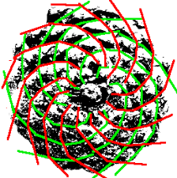

Minimalflächen und kürzest mögliche Verbindungen
Im Eindimensionalen

- Verbindungen in einem PC Prozessor $\rightarrow$ Seifenfilm Computer
- Hergestellt aus Plexiglasplatten, Zahnstochern und Seifenlösung
- Ergebnis: Seifenlamellen spannen sich in kürzest
möglicher Verbindung von Zahnstocher zu Zahnstocher.
Im Mehrdimensionalen

- Die ebene Fläche hat im rechteckigen Rahmen
den kleinsten Flächeninhalt (Minimalfläche) - ABER: Nicht alle Minimalflächen müssen
eben sein (Seifenblase)
Der vierdimensionale Würfel
- „Würfel“ in der 1. Dimension: Linie
- „Würfel“ in der 2. Dimension: Quadrat
- Würfel in der 3. Dimension: richtiger Würfel
- „Würfel“ in der 4.Dimension: Tesserakt oder Hyperwürfel
- Entsteht durch Verdopplung des Würfels und
die Verbindung seiner Eckpunkte
Die Fibonacci Folge
Die Fibonacci Folge
- Namensgeber: Leonardo von Pisa (1170-1240), gennant Fibonacci
- Beschrieb mit ihr 1202 das Wachstum einer Kaninchenpopulation \[ \{(0);\,1;\,1;\,2;\,3;\,5;\,8;\,13;\,21;\,24;\,55;\,89;\,...\} \]
Mathematische Besonderheiten
- Allgemein gilt \[ a_{n+1} = a_n + a_{n-1} \]
- Die Summe zweier aufeinanderfolgender Zahlen ergibt die unmittelbar danach folgende Zahl \[ 0+1=1;\,1+1=2;\,1+2=3;\,2+3=5;\,3+5=8;\,... \]
- Die Summe der Quadrate zweier benachbarter Fibonacci-Zahlen ist ebenfalls eine Fibonacci-Zahl \[2^2 + 3^2 = 13;\, 13^2 + 21^2 = 610\]
- Der Quotient zweier, aufeinanderfolgender Zahlen nähert sich dem Goldenen Schnitt an. \[ \frac{13}{8}=1,6250;\, \frac{21}{13}=1,61538461538\approx\Phi \]
Der Goldene Schnitt
- Wird als schön empfunden
- Beschreibt das Teilungsverhältnis einer bestimmten Strecke \[ \frac{a}{a+b} = \frac{b}{a} \]
- Irrationaler Zahlenwert $\Phi$ des Goldenen Schnitts ($\approx 1,6180$)
- Verbindung zu Fibonacci: Quotient zweier aufeinanderfolgender Zahlen nähert sich $\Phi$ an \[ \frac{13}{8} = 1,625;\, \frac{89}{55} = 1,6181;\]
Wachstumsvorgänge in der Natur
- Anzahl v. Spiralen in Blättern u. Früchten
im Beispiel: 13 Rote u. 8 Grüne Spiralen
Wachstumsvorgänge in der Natur
- Die Spirale des Nautilus (logarithmische Spirale):
Quadrate, die das Wachstum beschreiben,
setzen sich aus der Summe ihrer
Vorgänger zusammen. (Selbstähnlich)
Logarithmische Spirale
- Durch den Pol laufende Geraden schneiden die Kurve unter dem gleichen Tangentenwinkel.
- Die Spirale umkreist den Ursprung unendlich oft.
- Jede Windung wächst um einen konstanten Faktor.
- Schema in Wirbelstürmen, Galaxien, etc.
Abschließende Frage
Kann man mit der Mathematik die Natur beschrieben oder beschreibt die Natur die Mathematik?